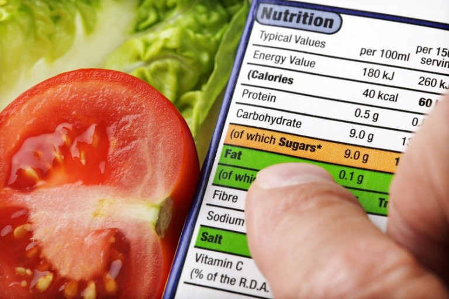
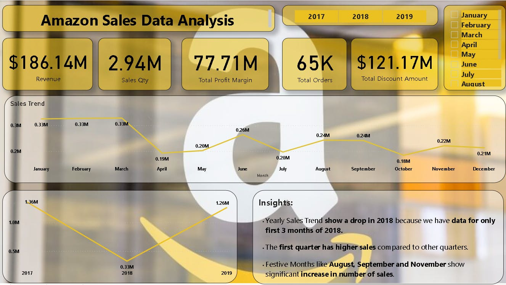
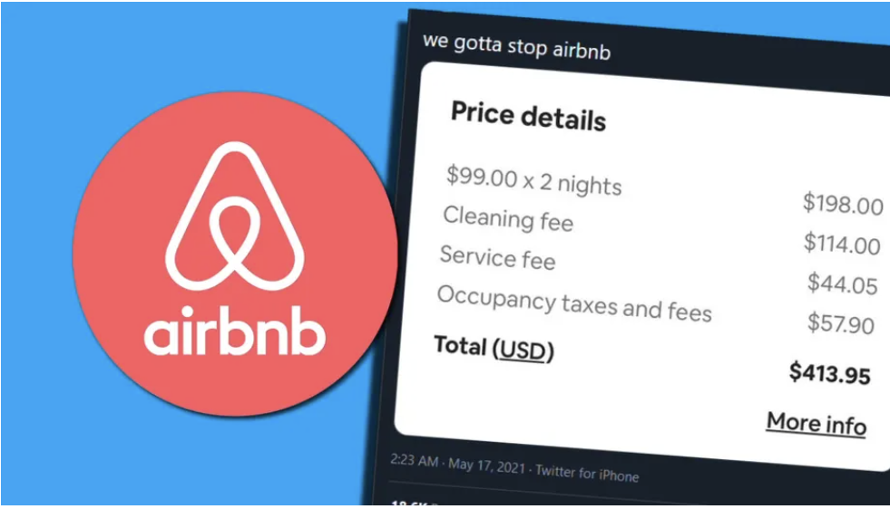
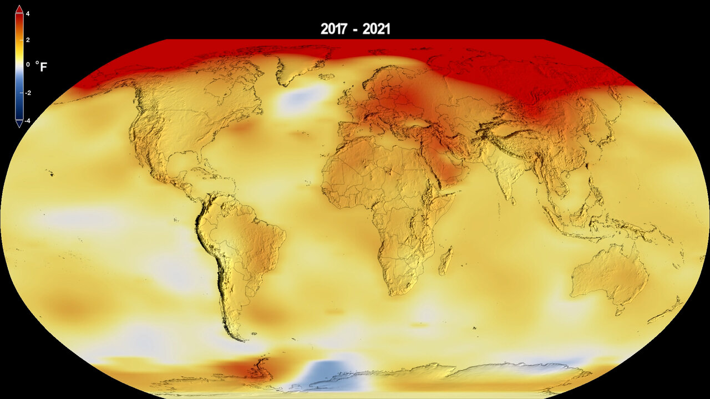

</Projects>
A machine learning model to predict flight prices using various ML algorithms.

Developed an NLP-based system to analyze news articles, extract key topics, and identify trends using machine learning.
Utilized deep learning techniques to detect and classify objects in the Caltech101 dataset.

Used Tableau to analyze daily calorie intake, meal-wise breakdowns, and food health categorization.

Customer feedback visualization focusing on ratings, cabin service, and geographic insights.

Machine learning model predicting credit card approvals using classification techniques.

Conducted an in-depth analysis of Amazon sales data to uncover trends in revenue, customer behavior, and seasonal demand.

Analyzed job market trends for data roles using web scraping and API data, uncovering insights on salaries, skills, and hiring demand through visual analytics.

Developed a CNN-based model for precision agriculture, accurately classifying plant species to enhance crop monitoring and decision-making using deep learning techniques.

AI-driven object detection and LLMs to study trends in climate change research (2010-2025).
